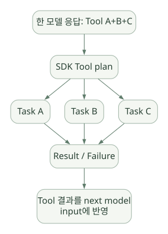

SECOND STUDY / Tool 계획과 실행
Tool 계획과 실행
이번 단원의 읽는 관점
Tool 실행 위치와 스키마·Task 배치·결과 정책·실패 정규화를 나눕니다.
살펴볼 경계Hosted Tool 경로, 병렬성의 단위, 모델 재호출 없이 종료하는 조건을 확인하세요.
이 페이지의 세부 목차
Part III. Tool Calling: 스키마에서 실제 실행까지
11. Tool 종류부터 실행 경계를 나눈다#
SDK에서 tools=[...]에 들어간 모든 항목이 같은 위치에서 실행되는 것은 아니다.
| 도구 유형 | 실행 주체 | 일반적인 책임 경계 | 중요 검사 |
|---|---|---|---|
FunctionTool (@function_tool) |
사용자 Python 런타임 | 사용자 코드가 DB/API/파일 접근 | Argument validation, Tool Guardrail, Approval, 업무 권한 |
Agent.as_tool() |
부모 Runner가 중첩 Agent 실행 | 자식 Run, 내부 Tool, 승인 전파 | 부모/자식 Context, 승인/이력 전파 |
Hosted OpenAI Tool |
OpenAI 모델 플랫폼 | OpenAI 측 도구 처리 | 해당 도구 자체의 정책 및 제공 기능 |
로컬 ShellTool / ApplyPatchTool |
앱이 제공한 Executor / Editor | OS/파일 시스템 | Sandbox, Approval, 실행 권한 |
ComputerTool |
앱 측 컴퓨터 작업 | 브라우저/데스크톱 | Safety Check, 실행 환경 |
| Local MCP | 연결된 MCP 서버 | 서버의 도구 실행 환경 | 서버 인증, Tool filtering, Approval |
| Hosted MCP | OpenAI 호스팅 연결 경로 | 모델 서비스 및 MCP 서버 | Hosted MCP Approval/Tool 정책 |
| Sandbox Agent의 Tool | Sandbox Backend | 격리 실행 공간 | 파일·네트워크·비밀정보 권한 |
[DOC] Tool Guardrail은 모든 Hosted Tool과 Handoff에 자동 적용되는 전역 방화벽이 아니다. Function Tool 주변 검증이 중심이다. 각 도구별로 안전 정책을 분리해야 한다. [D04, D09]
12. Python 함수가 Tool이 되는 세 단계#
12.1 스키마 변환#
Python 함수의 매개변수, 타입 힌트, docstring 등을 참고하여 Function Tool의 JSON Schema 및 설명을 구성한다. Pydantic 기반 파싱·검증 기능을 사용한다. [DOC: D09]
12.2 모델에게 도구를 노출#
turn_preparation.get_all_tools() 등에서 활성화 여부, 도구 목록과 Handoff를 정리해 모델 측 요청에 연결한다. Tool을 등록했다는 것과 모델이 실제로 그 Tool을 호출한다는 것은 다르다.
12.3 실행 요청을 SDK가 처리#
모델 응답에 function_call이 나오면 SDK는 Tool 이름과 호출 ID를 사용해 실행 계획을 만든다. 호출 인자를 검증한 뒤 Function Tool의 실행기로 넘기며, 승인 및 Guardrail 결과에 따라 실행 대신 중단 또는 거절이 일어날 수 있다. [SRC: S03, S05, S06]
# [PSEUDO] 실제 데코레이터 구현을 대체하는 설명 코드
schema = derive_json_schema(python_fn)
model_request.tools.append(schema)
model_output = await llm(...)
for call in model_output.tool_calls:
tool = lookup_tool_by_name(call.name)
parsed = validate_call_arguments(call.arguments, tool.schema)
if approval_required(call, parsed):
record_pending_approval(call)
else:
result = await execute_with_guardrails(tool, parsed)
append_result_for_next_model_turn(call.id, result)12.4 Argument validation ≠ 업무 데이터 검증#
lot_id: str 스키마를 통과해도 그 Lot의 조회 권한이 있는지, SQL이 안전한지, 결과가 실제로 존재하는지까지 보장하지 않는다. 타입 검증 → 인증/인가 → 업무 규칙 → 실행 → 결과 검증은 별도 계층이다.
13. tool_execution.py의 내부 구조와 실패 처리#
[SRC: S06] tool_execution.py에는 execute_function_tool_calls, function_needs_approval, resolve_enabled_function_tools와 Shell/ApplyPatch/Computer 관련 실행 함수가 있다. v0.24.0에는 함수 도구를 배치로 실행할 때 작업 상태·취소·후처리·오류 우선순위를 관리하는 구조가 있다.
공개 코드에서 확인한 내부 자료구조 예:
_FunctionToolTaskState: 개별 Tool Run, 순서, 실제asyncio.Task, post-invoke 단계 진입 여부._FunctionToolFailure: 실패 예외와 호출 순서 및 발생 소스(direct,cancelled_teardown,post_invoke)._select_function_tool_failure: 동시에 실패한 여러 Tool 중 어떤 실패를 표면화할지 결정._consume_function_tool_task_result: 백그라운드 Task에서 늦게 발생한 예외의 처리._FUNCTION_TOOL_CANCELLED_DRAIN_SECONDS등: 취소 후 남은 작업 정리를 위한 상수.
이 구조가 중요한 이유는 여러 Tool을 동시에 실행할 때 한 개가 실패한다고 나머지 모든 Task가 마법처럼 사라지는 것은 아니기 때문이다.
13.1 실패 전파 설계에서 알아야 할 질문#
- 동시 실행한 다른 Tool에 취소 요청을 보내는가?
- 취소된 Tool에서
finally또는 외부 API 요청이 여전히 진행 중일 수 있는가? - Task가 취소된 후 남은 예외를 어떻게 회수하는가?
- Tool 결과를 모델 입력에 쌓는 순서는 호출 완료 순서인가, 요청 순서인가?
- 이미 외부 시스템을 변경한 Tool에 대한 보상 트랜잭션을 누가 구현하는가?
이 내용이 처음 어려우면 Python asyncio.create_task, asyncio.gather, asyncio.CancelledError, try/finally를 먼저 복습하면 좋다.
14. 병렬 Tool Call: 무엇이 병렬인가?#
병렬의 단계는 셋으로 나눠야 한다.
- 모델 수준: 한 모델 응답이
Tool A, Tool B를 동시에 요청하는 것. - SDK 수준: 여러 Tool 요청을 Python 비동기 Task로 동시에 스케줄링하는 것.
- 시스템 수준: DB 드라이버·네트워크·실제 외부 서버가 요청을 실제로 겹쳐 처리하는 것.
모델이 3개 Tool을 한 번에 내놓아도 실제 속도가 3배로 빨라진다고 보장하지 않는다. 동기 함수의 차단, 서비스 Rate Limit, GIL 영향, 공유 DB 락, 워커 수 제한 등으로 이득이 감소할 수 있다.
가로로 이동해서 읽을 수 있습니다. 도식 크게 보기 ↗

원문의 학습용 도식입니다. 연결 방향·분기 조건·점선·쌍방향 연결을 보존해 세로로 배치했습니다. 실제 구현·의사코드·해석의 구분은 본문을 함께 읽으세요.
도식 원문 보기 (Mermaid)
flowchart TD
A[한 모델 응답: Tool A+B+C] --> B[SDK Tool plan]
B --> C[Task A]
B --> D[Task B]
B --> E[Task C]
C --> F[Result / Failure]
D --> F
E --> F
F --> G[Tool 결과를 next model input에 반영][SRC] v0.24.0의 tool_execution.py에는 Function Tool 배치를 위한 asyncio.Task 상태·취소 정리·오류 우선순위 처리 코드가 있다. 즉 병렬 Tool 실행은 실체가 있는 Runtime 기능이다. 그러나 특정 Tool 유형, 승인 대기, 스트리밍 및 오류 분기에서 항상 동일하게 동작하는지 개별 경로를 확인해야 한다.
14.1 병렬 실행에서 데이터 경합이 발생하는 이유#
읽기 전용 Tool은 병렬 이점이 큰 반면 같은 파일을 수정하거나 같은 세션 상태를 바꾸는 Tool은 경쟁이 발생한다. 프레임워크가 애플리케이션 도메인의 모든 충돌을 자동 판정하는 것은 아니다. 필요 시 개발자가 read/write lock, 세마포어, 낙관적 버전 확인, DB transaction을 설계해야 한다. [INF]
14.2 병렬 Tool vs 병렬 Agent#
- 병렬 Tool: 모델 하나가 여러 Tool을 호출해 실행함. 보통 다음 모델 호출은 그 결과를 수집한 뒤 계속 진행.
- 병렬 Agent: 부모가 여러
Agent.as_tool()자식 또는 외부 작업을 동시에 실행하도록 구성. 각 Agent는 자체 LLM Loop를 돌 수 있음. - Handoff: 다음 Agent로 소유권 이전. 같은 시점에 독립 Agent가 여러 개 실행된다는 뜻이 아님.
발표에 반드시 넣을 문장: 여러 Tool 호출, 여러 Agent 호출, 여러 모델 호출은 서로 다른 병렬성이다.
15. Tool 결과로 종료할 수도 있다: tool_use_behavior#
일반적인 Tool Flow는 도구 결과 → 모델 재호출 → 최종 답이지만, 일부 Agent 설정에서는 Tool 결과를 최종 출력으로 사용하는 정책이 가능하다. [DOC: D09]
이 설계는 정형 결과를 이미 확보했을 때 비용과 Latency를 줄일 수 있지만, 모델이 요약·해석할 기회를 건너뛰므로 최종 출력 스키마와 에러 메시지 처리 정책을 명확히 해야 한다.
15.1 결과 문자열과 구조화 출력의 혼동#
Pydantic 모델 등으로 설정한 output_type이 있다고 해서 실제 세계에서 참인 답을 보장하는 것은 아니다. 출력 구조 유효성, 데이터 근거의 타당성, 계산 재현성은 서로 다른 검증 기준이다.
16. Function Tool 실패는 어떻게 보이는가?#
도구 실행에서 오류가 났을 때 고려해야 할 층:
- 호출 인자 JSON 자체가 잘못됨.
- Pydantic/스키마 검증 실패.
needs_approval에 따른 승인 대기·거절.- Tool Input Guardrail에서 거절/차단.
- Python 함수 예외·Timeout·취소.
- Tool Output Guardrail에서 결과 거절/교체/차단.
- Tool 결과를 모델 입력으로 변환하는 단계의 에러.
- 모델 재호출 또는 전체 Run 종료 오류.
v0.24.0에는 Run 전체에 적용되는 Tool 오류 메시지 포맷터 기능이 추가되었다. RunConfig.tool_error_formatter는 특정 에러를 모델에 어떻게 보여줄지에 개입할 수 있지만, underlying 부작용을 되돌리거나 접근제어를 대신하지 않는다. [DOC: D00, D10]